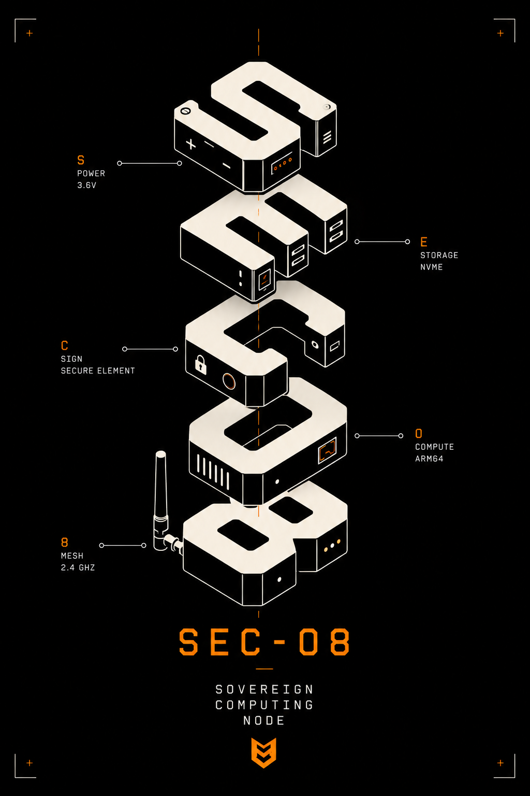
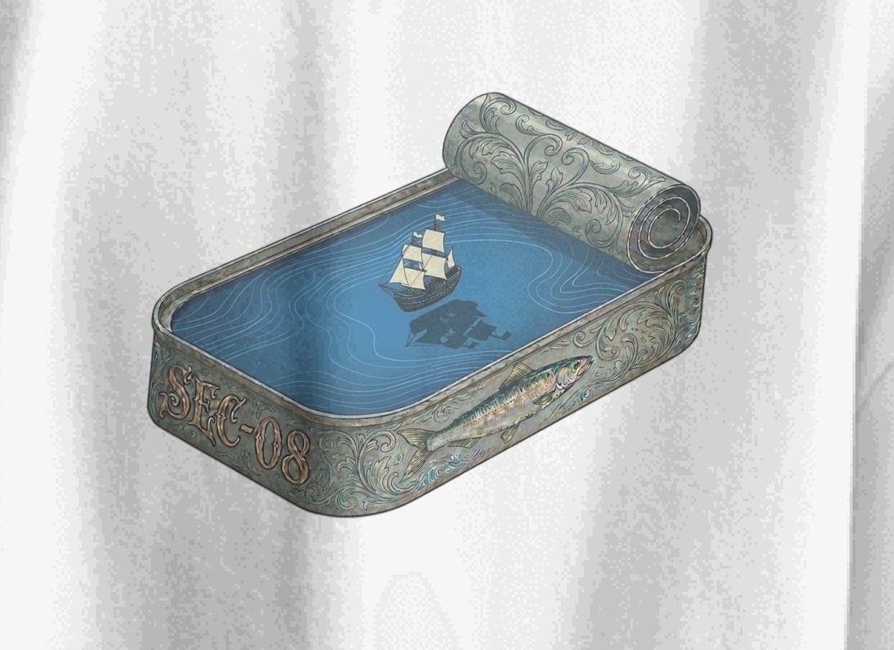
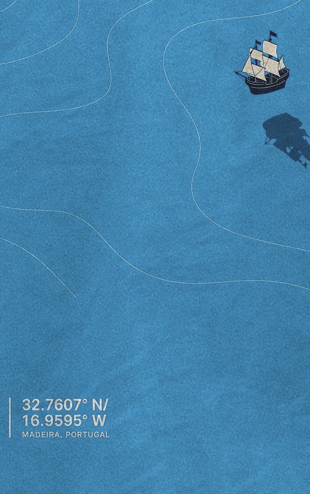
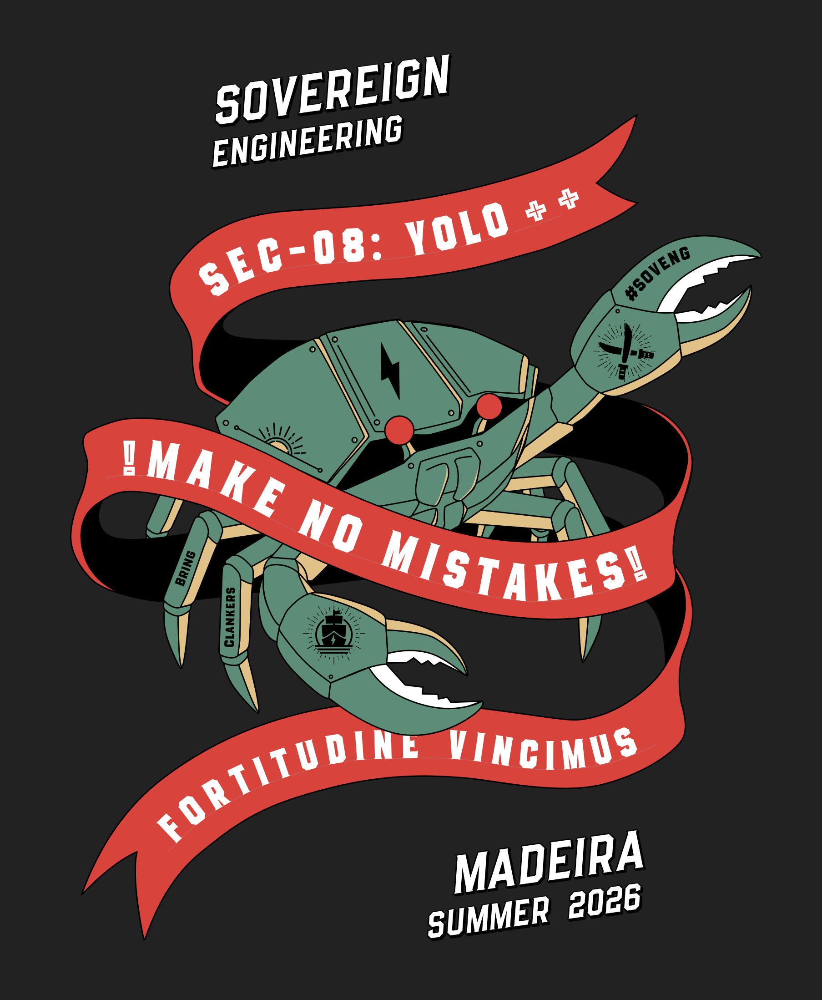

Madeira → Brasil / relato de experiência
01Uma ilha.
Seis semanas.
Código aberto.
Breno Brito · conversa com a Vinteum

01 / O formato
02Conviver, construir,
mostrar o que funciona.
Uma residência presencial para construir ferramentas que as pessoas possam executar, verificar e levar consigo.

01 / O formato
03Difícil de chegar
e difícil de sair.

01 / O formato
04A sexta-feira organiza
o resto da semana.
Direção e caminhada
O capitão orienta a semana, seguido de uma caminhada em grupo.
Palestras
Ideias técnicas e filosóficas entram em discussão.
Workshop
Aprender uma ferramenta usando-a.
Livre
Sem agenda formal: descansar, explorar a ilha ou implementar no seu ritmo.
Demo
6 minutos para mostrar. 2 para conversar.
Caminhadas e churrascos são o P&D que mais rende. Nix com Blossom nasceu numa caminhada.
02 / O espírito do Bitcoin
05Objetivo: construir
no espírito do Bitcoin
Não cabe numa frase, mas todo mundo reconhece quando ele é violado.
Pergunta recorrente: se o operador desaparecer, o que continua funcionando?
02 / O espírito do Bitcoin
06Nostr antipatterns
Distribuição que permita escolher e substituir intermediários.
Identidade que não depende do cadastro de uma plataforma.
Manter decisões e estado na ponta quando não exigem consenso.
Formatos verificáveis e interoperáveis, preservando dados privados.
Poder, controle e inteligência saem do servidor e vão para o cliente, o usuário.
Quando poder, controle e inteligência se concentram, o cliente pode ser rugpulled.
02 / O espírito do Bitcoin
07Os aplicativos mudam.
Os formatos permitem
que o trabalho continue.
Investir em protocolos e interfaces que outros clientes — e agentes — possam usar.
03 / Ferramentas que ampliaram o espaço de possibilidades
08Primitivos para construir
uma internet livre.
Moeda e registro de transações com regras que qualquer pessoa pode verificar.
Ecash ao portador sobre Bitcoin: tokens emitidos por uma mint, com privacidade por assinaturas cegas.
Rede mesh criptografada com identidades Nostr e múltiplos transportes.
Mensagens cifradas em grupo: identidades Nostr com o padrão MLS para as chaves do grupo. É a base do White Noise.
Pequenos aplicativos em sandbox, com serviços mediados por um runtime.
Sites estáticos publicados por Nostr, com arquivos no Blossom.
Blobs endereçados pelo hash SHA-256, recuperáveis de servidores HTTP.
04 / Projetos interessantes
09Totem: a rede existe
porque as pessoas se movem.
Um dispositivo aberto que leva um relay Nostr consigo. Quando dois Totems se aproximam, eles se reconhecem e sincronizam suas notas.
Uma rede sneakernet: os dados viajam com as pessoas, sem infraestrutura.
Imaginado no SEC-03, ficou dois anos engavetado. Faltavam FIPS, napplets e runtimes.
Camadas de um Totem
Napplets · apps pequenos que rodam no dispositivo
Nostr · um relay guarda as notas e sincroniza quando dois Totems se encontram
FIPS · Bluetooth, Wi-Fi e outros transportes em uma só mesh
Hardware · Raspberry Pi Zero no protótipo; qualquer hardware serve
04 / Projetos interessantes
10Nix + Blossom:
pacotes sem registro.
Nix endereça tudo por hash. Blossom guarda blobs por hash.
Narwal (Julien) e nixstr-cache (hzrd149) fazem a ponte.
Como o pacote chega ao Nix
Publicador · envia os pacotes ao Blossom e o hash raiz ao Nostr
Narwal · lê o Nostr, entrega o catálogo e redireciona para o Blossom
Nix · usa tudo como um cache comum, sem saber de Nostr
04 / Projetos interessantes
11Outros projetos
que chamaram atenção.
Celulares próximos trocam apps e arquivos por Bluetooth ou FIPS · Arjen
Playlist de escalada sincronizada por BLE e FIPS, sem internet · J e Julien
Pacotes FIPS enviados por som, de um notebook a outro · Sandwich
Nsites para comércios locais, com npub, QR e ponto de venda
Mapas por Hashtree e eventos Nostr, com rotas de ônibus de Madeira · Rahul
Age of Empires em um único HTML, multiplayer como napplet e como nsite · Gsovereignty e Yo
Sistema resiliente a psicopatas, refeito como napplets · Jeroen e Gsovereignty
05 / Meus projetos
12Seis semanas de perguntas
virando demonstrações.
Como usar a privacidade do Cashu para criar uma exchange descentralizada?
Como dar a habilidade de agentes criarem websites que vivem no URL, não no servidor?
Como o Bitchat poderia resolver mais problemas frequentes de falta de conectividade?
Como Cashu poderia ter a facilidade de uma conta num site?
Como fazer um jogo de cartas, onde você possui as cartas, sem usar o modelo falho de NFT do Ethereum?
Como expandir a ideia do Hosted Nowhere para, ao invés de 8 aplicativos pré-existentes, qualquer tipo de aplicativo?
Semana 01 / Granola
13Trocar ecash.
Coordenar por Nostr.
Atomic swaps entre carteiras Cashu, inclusive em mints diferentes.
Trustless e 100% anônimo entre os usuários. A confiança continua nas mints.
Atomic swap
Semana 02 / nowhere-cli
14Uma interface de terminal
para o Hosted Nowhere.
Criar sites pelo terminal, para agentes e para pessoas.
O site vive no link, não num servidor: um agente cria e entrega só a URL.
Do pedido ao link
Agente ou modo interativo
→ nowhere-cli → URL
Semana 03 / Arraiá
15O evento continua
quando a internet falha.
Bitchat é comunicação sem internet, por Bluetooth.
Arraiá acrescenta localização, mapa e pagamentos com Cashu.
Rede local por Bluetooth
Semana 04 / cashu-sync
16Uma carteira.
Mais de um aparelho.
O mesmo Bearer asset em dispositivos diferentes.
O relay sincroniza. A mint decide o estado do dinheiro.
Uma autoridade monetária
Semana 05 / NutFT + 600B Timelock TCG
17Uma carta como ativo bearer.
Um jogo como laboratório.
Cartas como ativos ao portador, representadas por tokens Cashu.
Um jogo de cartas, com FLX, torna a ideia concreta.
Mesmas propriedades de cartas físicas
- A mint emite
- Trocas entre pessoas são anônimas (pode usar Granola)
- Qualquer pessoa consegue verificar se a carta é falsa
- O operador da mint cria um app/site/napplet onde dá para jogar com suas cartas
- Qualquer pessoa pode criar outro app/site/napplet, com outra experiência de jogo, com as mesmas cartas
- Qualquer um pode vender pelo preço que precisar
Semana 06 / Envelope
18Um link leva o aplicativo
até o estado certo.
Aplicativo e estado, num só link.
Depois do primeiro acesso, reabre sem rede.
Do link ao aplicativo
05 / O que fica
19Projetos diferentes.
A mesma pergunta de fundo.
Que dependência podemos reduzir sem esconder a confiança que ainda existe?
Dinheiro e ativos
Granola · cashu-sync · NutFT
Coordenação e uso do ecash com a autoridade da mint explícita.
Distribuição
nowhere-cli · Envelope
Formatos e links portáveis, com runtime e acesso inicial bem definidos.
Conectividade
Arraiá
Comunicação próxima das pessoas, com limites reais de alcance.
06 / Para discutir com a Vinteum
20Como levar esse ciclo
para a nossa comunidade?
Proposta de conversa / 01
Repetir o formato
Um encontro de construção com escopo curto, revisão entre pares e demo no final.
Proposta de conversa / 02
Usar casos concretos
Estudar fronteiras de confiança, recuperação de estado e interoperabilidade a partir dos protótipos.
Proposta de conversa / 03
Deixar material aberto
Transformar demos em tutoriais reproduzíveis e perguntas técnicas que outros possam investigar.
Qual desses experimentos rende a melhor sessão técnica com vocês?
Madeira → Brasil
21Trazer o código.
Compartilhar as perguntas.
Continuar construindo.
Breno Brito · SEC-08

Apêndice / Para explorar depois
22